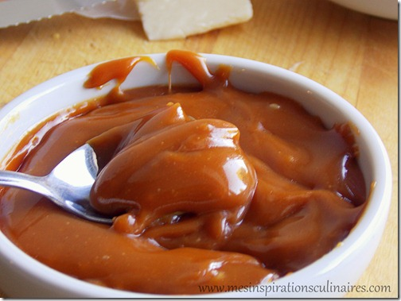

 Brittany is the country par excellence of salted butter. In 1343, King Philip VI of Valois generalized in almost all the kingdom a famous tax on salt, salt. The price of salt, then a strategic product for the preservation of food, increased considerably, and the peasants, in order to save money, dropped the salted butter for the sweet butter. The relationship with Brittany? Like other "countries", it was free of salt and salt thus remained a cheap commodity! The production of salted butter developed there and the cooks probably took the habit, very quickly, to mix it with caramel.
In 1977, Henri Le Roux, chocolatier of Quiberon (Morbihan), made this recipe ... a sweet! He decided to invent a confectionery that was simple and different from the products usually marketed by his competitors: after three months of testing, he developed a half-salted butter caramel to which he added nuts, hazelnuts and crushed almonds. , resulting in a unique texture. Thanks to this sweet, he became famous all over the world.
Avoid turning the caramel with a utensil. Use a very clean pan and a sugar or water without impurities. For a thicker sauce, let reduce for a longer time after resuming boiling at the end of cooking.